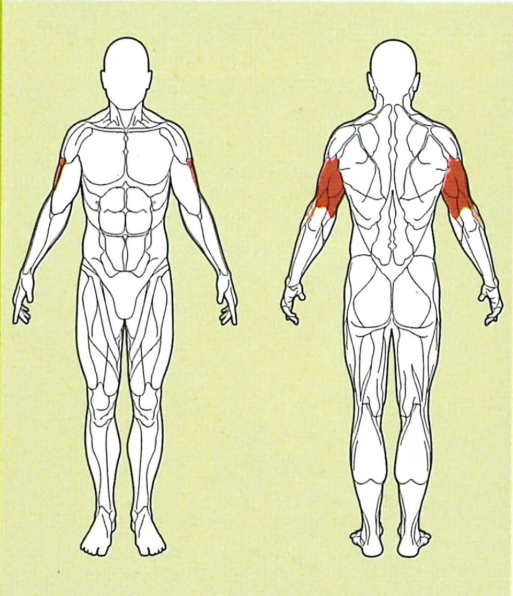

Trizeps (Kabelzug)

Ausgangsposition
● Den Kabelzug auf Kopfhöhe einstellen, und den gewünschten Griff einhängen
● Schulterbreit vor den Kabelzug stehen, und die Ellenbogen nahe am Körper halten
● Die Knie leicht durchbeugen
Ausführung
Halte deinen Stand sicher und stabil, und drücke den Griff langsam und kontrolliert aus dem
Ellenbogengelenk nach unten.
Die Arme so stark durchstrecken wie möglich, um den Trizeps richtig zu beanspruchen
Rückführung
Dann führst du den Griff langsam wieder nach oben, zurück in die Ausgangsposition, erhalte dabei die Spannung in den Armen aufrecht